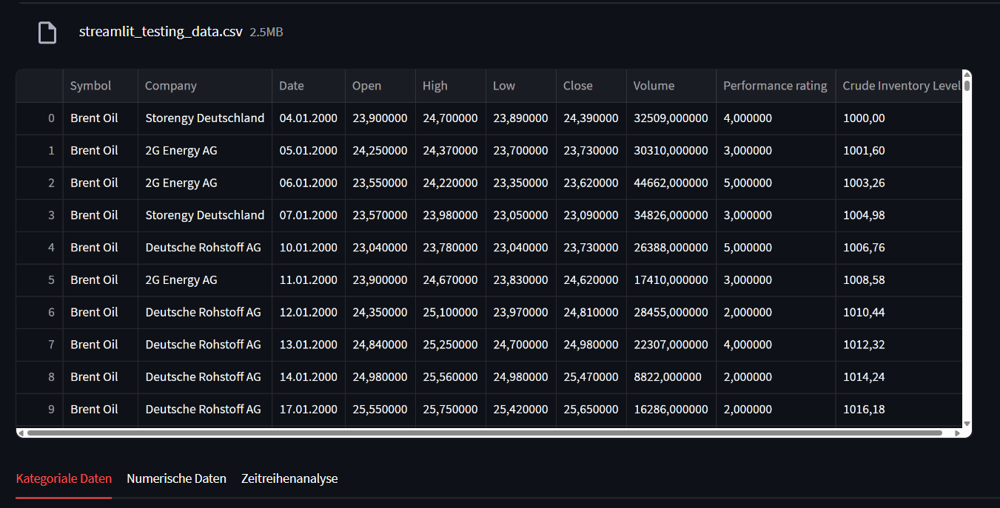
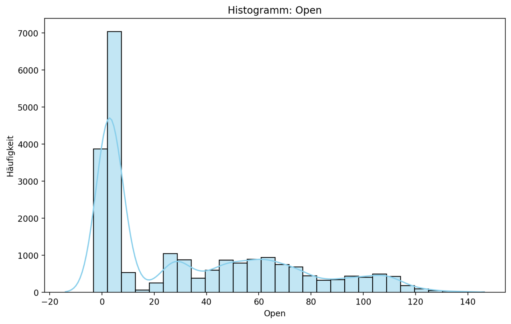

Verwendung von Streamlit zur Umwandlung von Rohdaten aus CSV-Dateien in eine interaktive Dashboard-Webanwendung
sowie Bereitstellung einer serverlosen Benutzeroberfläche, die mit Python-Code betrieben wird.
Dashboards spielen eine entscheidende Rolle bei der Datenanalyse, da sie eine visuelle und interaktive
Möglichkeit bieten, Daten darzustellen, zu analysieren und zu verwalten. Sie ermöglichen es Fachleuten,
umsetzbare Erkenntnisse zu gewinnen, Trends zu überwachen und fundierte Entscheidungen zu treffen.
Dashboards können Datenvisualisierungen, statistische Analysen, Ergebnisse von Machine-Learning-Modellen
und vieles mehr anzeigen. Damit sind sie ein äußerst nützliches Werkzeug für jeden Programmierer, um
Neulinge in die Datenanalyse einzuführen.
Letztendlich sind Dashboards Tools, die dabei helfen, Ergebnisse aus der explorativen Datenanalyse zu
präsentieren und Modellleistungsmetriken zu veranschaulichen. So können auch Nutzer ohne
Programmiererfahrung Vorhersagen und Empfehlungen aus maschinellen Lernmodellen einsehen und historische
Trends und Muster über ein benutzerfreundliches Dashboard visualisieren.
Download einer CSV-Beispieldatei zum Testen der Streamlit-Dashboard-Funktionen:
Das Ziel dieses Projekts ist es, zu zeigen, wie Rohdatensätze (in der Regel in Form von CSV-Dateien) mit
Streamlit in interaktive und aufschlussreiche visuelle Analysetools umgewandelt werden können.
Dieses Dashboard wurde entwickelt, um wichtige Aspekte der explorativen Datenanalyse (EDA), der Prognose
und der statistischen Modellierung auf eine Weise zu veranschaulichen, die sowohl für technische als auch
für nicht-technische Benutzer zugänglich ist.
Durch die Bereitstellung einer browserbasierten Oberfläche ohne Programmieraufwand schließt das Projekt die
Lücke zwischen Backend-Analysen und Frontend-Interpretation und ist damit eine ideale Lösung für Analysten,
Forscher und Entscheidungsträger, die Business Intelligence praktizieren, indem sie Geschäftsdaten
analysieren und in umsetzbare Erkenntnisse für strategische und taktische Entscheidungen umwandeln.
Business Intelligence und Datenanalyse sind unerlässlich, um aus Daten aussagekräftige Erkenntnisse zu
gewinnen. Interaktive Dashboards helfen dabei, die Lücke zwischen den theoretischen und abstrakten Methoden
der Datenanalyse und einem visuellen Medium zu schließen, das zu konkreten, datenbasierten Entscheidungen
führen kann.
Streamlit ist eine beliebte Python-Bibliothek, die speziell für die Datenvisualisierung entwickelt wurde.
Elemente wie Diagramme, Grafiken, Heatmaps und Karten helfen dabei, Datenmuster und Trends effektiver zu
vermitteln als reine Zahlen. Mit Hilfe von Streamlit können diese Elemente um interaktive Elemente
erweitert werden, die allen Visualisierungstools einen zusätzlichen Mehrwert verleihen.
Durch Klicken auf die folgende Schaltfläche wird das Streamlit-Dashboard geöffnet und zeigt Filtertools,
zusammenfassende Statistiken, Datenvisualisierungen und Modellausgaben mit vollständiger Benutzerkontrolle
an. Der Hauptzweck besteht darin, sowohl technische als auch nicht-technische Benutzer durch zentrale
Konzepte der Datenwissenschaft wie Verteilungsanalyse, Schiefe, Variabilität und Prognosen zu führen.
Mit Streamlit, einer einfachen, datengesteuerten Webanwendung für Data-Science-Projekte, können Benutzer
Datenrahmen bearbeiten, Metriken plotten, Analysetests durchführen und Python-Funktionen bereitstellen,
ohne einen Python-Interpreter installieren zu müssen.
Diese Streamlit-Anwendung umfasst eine Reihe dynamischer Funktionen, mit denen Benutzer ihre eigenen
Datensätze hochladen und wichtige Erkenntnisse gewinnen können. Die App erkennt automatisch Datentypen,
übernimmt die Datenbereinigung (z. B. numerische Konvertierung) und bietet mehrere Registerkarten zur
Analyse kategorialer, numerischer und zeitreihender Daten sowie Visualisierungen und ARIMA-basierte
Prognosen.

KATEGORIALE ANALYSE
Das Dashboard enthält maßgeschneiderte Tools für die Arbeit mit verschiedenen Datentypen. Kategoriale
Variablen werden mithilfe von Balken- und Kreisdiagrammen analysiert, um Häufigkeitsverteilungen und
Ungleichgewichte zwischen Gruppen hervorzuheben. Dabei werden Daten analysiert und zusammengefasst, die in
verschiedene Kategorien oder Gruppen fallen.
Eine Häufigkeitsverteilung ist bei der Arbeit mit kategorialen Daten sehr nützlich, da sie eine klare und
übersichtliche Zusammenfassung der Verteilung der verschiedenen Kategorien oder Werte innerhalb einer
kategorialen Variablen in einem Datensatz liefert. Balkendiagramme bieten eine übersichtliche Darstellung
der Häufigkeitsverteilung von Kategorien und eignen sich daher ideal zur Identifizierung dominanter
Gruppen, seltener Ereignisse und Ungleichgewichte in den Daten.
Diese Diagramme unterstützen die vergleichende Analyse zwischen Gruppen und sind besonders nützlich bei der
Interpretation nominaler oder ordinaler Variablen. Im Gegensatz dazu betonen Kreisdiagramme die relativen
Anteile jeder Kategorie und bieten eine intuitivere Darstellung, wenn es darum geht, zu vermitteln, wie
viel jede Gruppe zum Ganzen beiträgt.
Zusammen helfen diese Visualisierungen den Benutzern, die Struktur, Ausgewogenheit und potenzielle
Verzerrung kategorialer Merkmale zu beurteilen, was bei der Vorbereitung von Daten für die Modellierung
oder Interpretation von entscheidender Bedeutung ist. Wenn nicht alle Kategorien einer kategorialen
Variablen gleich stark vertreten sind, kann dies mehrere negative Auswirkungen auf die Datenanalyse und
-interpretation haben.
Das liegt daran, dass eine Dominanz einer Kategorie in der Verteilung zu einer verzerrten Wahrnehmung der
gesamten Datenmuster führt, was wiederum zu einer verzerrten Analyse und einer falschen statistischen
Signifikanz führt, was sich wiederum auf die Modellleistung auswirkt.
Viele statistische Methoden gehen davon aus, dass Daten normalverteilt sind. Bei verzerrten Daten können
Transformationen erforderlich sein, um diese Annahmen zu erfüllen und die Gültigkeit von Tests wie ANOVA,
t-Tests und Korrelationsanalysen sicherzustellen.
NUMERISCHE ANALYSE
Numerische Merkmale werden mithilfe deskriptiver Statistiken – Mittelwert, Median, Varianz, Schiefe und
mehr – sowie visueller Tools wie Boxplots und Histogrammen zusammengefasst, die dabei helfen, Ausreißer und
Verteilungsmuster zu identifizieren. Boxplots bieten eine kompakte Zusammenfassung der Verteilungsmerkmale
– wie Median, Streuung, Schiefe und Ausreißer –, sodass Benutzer Anomalien erkennen und Abweichungen auf
einen Blick beurteilen können. Histogramme ergänzen Boxplots, indem sie die Häufigkeit von Werten über
definierte Intervalle (Bins) veranschaulichen und Benutzern helfen, die Form, Modalität und Schiefe der
Verteilung zu verstehen.
Die Boxplot-Funktion ist ein wichtiges Werkzeug in der statistischen Datenanalyse. Sie fasst die Verteilung
einer numerischen Variablen anhand wichtiger Quantile (Minimum, Q1, Median, Q3, Maximum) zusammen und hebt
potenzielle Ausreißer hervor. Boxplots sind entscheidend für die schnelle Beurteilung der Symmetrie,
Schiefe und Streuung von Daten sowie für die Identifizierung von Extremwerten, die sich auf nachgelagerte
Modelle oder Analysen auswirken könnten.
Diese Diagramme unterstützen die vergleichende Analyse zwischen Gruppen und sind besonders nützlich bei der
Interpretation nominaler oder ordinaler Variablen. Im Gegensatz dazu betonen Kreisdiagramme die relativen
Anteile jeder Kategorie und bieten eine intuitivere Darstellung, wenn es darum geht, den Beitrag jeder
Gruppe zum Ganzen zu vermitteln.
Die numerische Datenanalyse konzentriert sich auf die Zusammenfassung von Eigenschaften wie Zentral
tendency (Mittelwert, Median, Modus), Streuung (Standardabweichung, Varianz) und Form (Schiefe, Kurtosis).
Zusammenfassende Statistiken bieten einen kompakten, informativen Überblick über die Eigenschaften eines
Datensatzes.

ZEITREIHENMODELLIERUNG
Schließlich kombiniert das Zeitreihendiagramm die Datenvisualisierung mit Prognosen, indem es ein
SARIMA-Modell verwendet, um Trends zu identifizieren und zukünftige Werte vorherzusagen, wobei
Unsicherheiten durch Konfidenzintervalle berücksichtigt werden. Diese Diagramme bieten ein umfassendes
Toolkit für die Analyse numerischer Variablen, die Validierung von Annahmen und die Generierung
vorausschauender Erkenntnisse.
Die Zeitreihenanalyse umfasst die Untersuchung historischer Datenpunkte über Zeitintervalle hinweg, wobei
saisonale Schwankungen, Trends und Fluktuationen innerhalb der Daten betrachtet werden, die später mit
Hilfe von Techniken wie SARIMA-Modellen untersucht werden können.
Mit der Zeitreihendiagrammfunktion können Benutzer visualisieren, wie sich eine numerische Variable im
Laufe der Zeit entwickelt, und diese Analyse mithilfe der SARIMA-Modellierung (Saisonalität Autoregressive
Integrated Moving Average) auf die Zukunft ausweiten. Die Zeitreihenanalyse ist unerlässlich, um zeitliche
Trends, Saisonalität, zyklisches Verhalten und Musteränderungen aufzudecken.
Für dieses interaktive Dashboard verwenden wir ein SARIMA-Modell, das für Seasonal (S), Autoregressive
(AR), Integrated (I) und Moving Average (MA) steht und sich besonders gut für die Erfassung komplexer
Muster, Trends und Saisonalität in Zeitreihendaten eignet. (Das Modell enthält feste s-, p-, d- und
q-Werte.)
Jede Komponente des Dashboards spiegelt ein grundlegendes Konzept der Datenwissenschaft und Statistik
wider. Die Frequenzanalyse unterstützt Klassifizierungs- und kategoriale Kodierungsentscheidungen,
zusammenfassende Statistiken untermauern Modellierungsannahmen und Feature Engineering, und die
Zeitreihenmodellierung ermöglicht Vorhersagen, Anomalieerkennung und operative Planung.
In realen Szenarien könnten Dashboards wie dieses Energieprognosen, Finanzanalysen, die Verfolgung der
Nachfrage im Einzelhandel oder administrative Entscheidungen unterstützen – überall dort, wo eine schnelle,
visuelle Interpretation strukturierter Daten erforderlich ist.
STREAMLIT
Streamlit wurde mit Blick auf Einfachheit und Geschwindigkeit entwickelt. Seine Syntax ist intuitiv und
spiegelt die Struktur eines Python-Skripts wider, sodass Datenwissenschaftler und Analysten innerhalb
weniger Minuten von der Idee zur App gelangen. Streamlit rendert Widgets, Diagramme und Textausgaben
automatisch, während Sie Ihr Skript schreiben, ohne dass Sie über Kenntnisse in HTML, CSS oder
Frontend-Logik verfügen müssen.
Dies macht es ideal für Rapid Prototyping, interne Tools oder Lehrumgebungen, in denen Zugänglichkeit und
Interaktivität im Vordergrund stehen. Durch die nahtlose Integration mit Data-Science-Bibliotheken wie
Pandas, Seaborn und Statsmodels liegt der Schwerpunkt eher auf der Analyse als auf dem Interface-Design.
DASH
Dash hingegen bietet eine fortschrittlichere, produktionsreife Umgebung und ermöglicht hochgradig
angepasste Layouts, mehrseitige Anwendungen und eine detailliertere Steuerung des Komponentenverhaltens
über Callbacks und Frontend-Routing.
Durch diese zusätzliche Kontrolle eignet sich Dash für Situationen, in denen Anwendungen öffentlich
bereitgestellt, in Unternehmensplattformen integriert oder für die Benutzererfahrung über mehrere Rollen
oder Geräte hinweg optimiert werden müssen. Diese Flexibilität geht jedoch mit einer gewissen Komplexität
einher, da Dash ein tieferes Verständnis der UI-Logik und Anwendungsstruktur erfordert, was oft mehr
Entwicklungszeit in Anspruch nimmt.
Letztendlich ermöglichen beide Tools Datenfachleuten die Erstellung leistungsstarker, browserbasierter
Tools, die ausschließlich Python verwenden. Die Wahl zwischen Streamlit und Dash hängt jedoch davon ab, ob
die Dashboard Geschwindigkeit und Einfachheit oder Kontrolle und Anpassungsmöglichkeiten priorisieren.